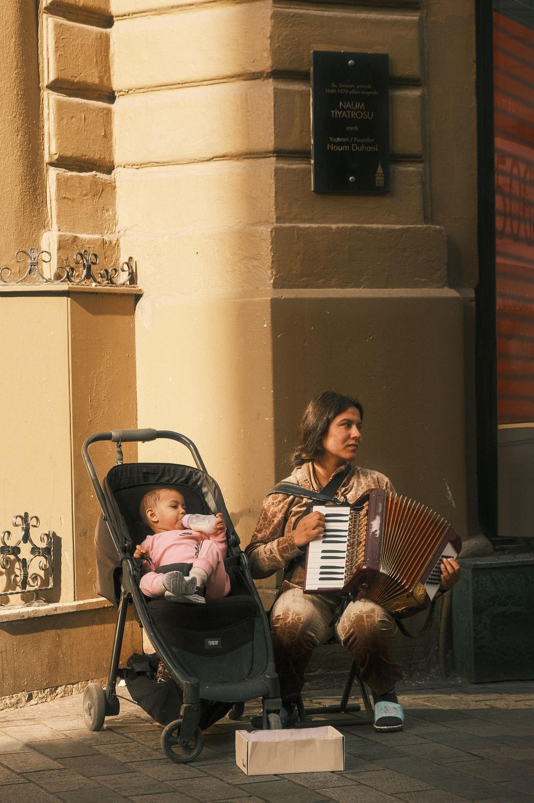

今天在赶了几篇课设论文时候，我脑子里对于一个一直指导我人生的思想逐渐明朗，在这一下，想要分享给大家的这个欲望一下子涨起来了。首先我给今天我要分享的观点命名一下，我把它命名为：“周期性课题守恒律”。这是我在接触斯多葛学派的坚忍、阿德勒心理学的勇气，以及马克思辩证唯物主义的发展观之后，基于我自己的一些日常事宜以及经历的感受，把他们融合在一起的一个概念。
首先，我眼中的人生——也就是我们每个人这几十年的所见、所闻、所感，它绝不是一段无序的随机漫步，而是一个分阶段、有规律、螺旋式上升的动态过程。在这里呢，我要特别澄清一点：我并非在鼓吹宿命论，也不是说所有人都要活成同一个模子或者是说大家都会是同种感悟。每个人的人生剧本都是独一无二的，那些自己经历的悲欢离合、那些每一次让你大哭或者大笑的瞬间，这都属于你自己，这也一定是不可复制至其他人的。
但我真正想要表达的是：“虽然我们的‘体验形式’以及‘过程’千差万别，但在生命的螺旋进程里，那些必须面对的‘课题’却是不可逾越的，必然是守恒的。”
人这一辈子，是分周期的。在特定的年龄段，或者说在那个特定的螺旋层级上，命运一定会给你派发特定的考卷。无论你是谁，关于自我接纳、关于亲密关系、关于责任承担、关于生老病死，这些课题都会准时的在你的人生周期降临。这便是我所说的关于人生的“必然体验”。
面对这些必然降临的挑战，人们大多数都会试图逃避，这与我们几万年的进化中“省力”是对应一致的。可是我们大家都知道的事，一些你不愿意直接面对的事情，譬如“工作受阻”、“家庭关系不和睦”、“学业不顺利”等等，这些你没有在当下阶段解决的课题，那它一定会重新出现在你后续的其他阶段，这是无法逃避的。
人生中必须经历的体验总是守恒的。那些你此刻因为恐惧而试图绕过的课题、那些你想要逃避的责任，它们并不会凭空消失，也不会被岁月冲淡。它们只是暂时让你觉得安好，但其实这个就像高息借贷，这些“体验债务”会一直积压在你人生的账户里，并且在后续让你付出更高的代价。
也就是说：如果你现在不全身心、勇敢地去经历它、去克服它、去感受那份痛苦或磨砺，那么在未来的某一个人生周期，这些未完成的课题终将以更猛烈的程度复现。
二十岁逃避的磨练，三十岁会变成危机；
三十岁逃避的责任，四十岁会变成崩塌。
所以，这就是我在本文中想要对自己，也对所有人分享的话：“面对人生那些必然的课题，请全身心地去‘体验’吧。既然不可逾越，那就正面硬刚；既然守恒存在，那就当下结清。”
唯有彻底地面对、经历它，我们才能真正翻过这一页，去迎接生命螺旋中的下一次上升。